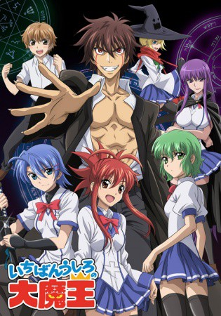

#4248 Demon King Daimao
 
 IMDB-Wertung: 7.2 / 10
IMDB-Wertung: 7.2 / 10  Metascore: 0
Metascore: 0 
Akuto Sai hat es sich zum Ziel gesetzt, in den höchsten Magierorden seines Landes aufgenommen zu werden, um dann der Gesellschaft als deren Kleriker dienen zu können. Am Tag seiner Aufnahme an der Constan Magieakademie, ergibt sein Eignungstest Folgendes: "Zukünftiger Beruf - Teufelskönig". So beginnt schließlich seine harte Schulzeit, in der er von der eifrigen Klassensprecherin verachtet, von einem Mädchen mit mysteriösen Kräften begehrt, und von einer wunderschönen Androidin bewacht wird.(Quelle: anisearch.de)
Jahr: 2010
Dauer: 24 Minuten
FSK: 16
Land: Japan Studio: AT-XTonspuren: DD2.0 - ,
Untertitel: Deutsch,
Auflösung: 720p (1280x720) Größe: 408 MB
Genre: Action, Komödie, Fantasy, Animation/Trick
Regisseur: Takashi Watanabe, Charles Martin, Charles Martin, Charles Martin, Charles Martin, Charles Martin, Charles Martin, Charles Martin, Charles Martin, Charles Martin, Charles Martin, Charles Martin, Charles Martin, Charles Martin, Charles Martin, Charles Martin, Charles Martin, Charles Martin, Charles Martin, Charles Martin, Charles Martin, Charles Martin, Charles Martin, Charles Martin, Charles Martin, Charles Martin, Charles Martin, Charles Martin, Charles Martin, Charles Martin, Charles Martin, Charles Martin, Charles Martin, Charles Martin, Charles Martin, Charles Martin, Charles Martin, Charles Martin, Charles Martin, Charles Martin, Charles Martin, Charles Martin, Charles Martin, Charles Martin, Charles Martin, Charles Martin, Charles Martin, Charles Martin, Charles Martin, Charles Martin, Charles Martin, Charles Martin, Charles Martin, Charles Martin, Charles Martin, Charles Martin, Charles Martin, Charles Martin, Charles Martin, Charles Martin, Charles Martin, Charles Martin, Charles Martin, Charles Martin, Charles Martin
Drehbuch: Vikram Weet
Soundtrack:
Darsteller:
- Takashi Kondô als Akuto Sai
- Yôko Hikasa als Junko Hattori
- Tsubasa Yonaga als Hiroshi Miwa
- Aoi Yuki als Korone
- Aki Toyosaki als Keena Soga
- Shizuka Itô als Fujiko Etou
- Ryô Hirohashi als Lily Shiraishi
- Tarusuke Shingaki als Bouichirou Yamato
 Haruka Tomatsu als Eiko Teruya
Haruka Tomatsu als Eiko Teruya- Ayana Taketatsu als Michie Ootake
- Kaoru Mizuhara als Kanna Kamiyama
- Minako Kotobuki als Arnoul
- Chiaki Takahashi als Mitsuko Torii
 Jôji Nakata als Peterhausen
Jôji Nakata als Peterhausen- Yuka Iguchi als Yuuko Hattori
- Kôsuke Toriumi als Brother Etou
- Yuzuru Fujimoto als Principal
- Kaori Akashi als D13
- Tetsu Shiratori als Garasu Yata
- Kaoru Katakai als Junko's Grandmother
- Atsushi Ono als Youzou Hattori
- Koutarou Nakamura als Keizou Teruya
- Kanako Toujô als Mother Etou
- Tomoyuki Higuchi als 2V
- Haruo Satô als Mister X
- Sayuri Yahagi als Yukiko Miwa
- Kotaro Nakamura als Keizo Teruya
- Hitoshi Yanai als Rubbers
- Ryuta Morikawa als Ninja
- Shintarô Nakano als Cameraman
- Kensuke Nishi als Takeshi
- Kiyohito Yoshikai als Ninja
Datei: X:\HD-Anime-Serien\Demon King Daimao\Demon King Daimao E01 Die Unfreiwillige Geburt des Dämonenkönigs.mkv seit 26.08.2016
Festplatte: Gemischt-01+Anime
 Es gibt insgesamt 67 Filme in der Gruppe 'HD-Anime-Serien'
Es gibt insgesamt 67 Filme in der Gruppe 'HD-Anime-Serien'